10 Layers
You are reading the work-in-progress second edition of R for Data Science. This chapter is largely complete and just needs final proof reading. You can find the complete first edition at https://r4ds.had.co.nz.
10.1 Introduction
In sec-data-visualization, you learned much more than just how to make scatterplots, bar charts, and boxplots. You learned a foundation that you can use to make any type of plot with ggplot2.
In this chapter, you’ll expand on that foundation as you learn about the layered grammar of graphics. We’ll start with a deeper dive into aesthetic mappings, geometric objects, and facets. Then, you will learn about statistical transformations ggplot2 makes under the hood when creating a plot. These transformations are used to calculate new values to plot, such as the heights of bars in a bar plot or medians in a box plot. You will also learn about position adjustments, which modify how geoms are displayed in your plots. Finally, we’ll briefly introduce coordinate systems.
We will not cover every single function and option for each of these layers, but we will walk you through the most important and commonly used functionality provided by ggplot2 as well as introduce you to packages that extend ggplot2.
10.1.1 Prerequisites
This chapter focuses on ggplot2. To access the datasets, help pages, and functions used in this chapter, load the tidyverse by running this code:
10.2 Aesthetic mappings
“The greatest value of a picture is when it forces us to notice what we never expected to see.” — John Tukey
Remember that the mpg data frame bundled with the ggplot2 package contains 234 observations on 38 car models.
mpg
#> # A tibble: 234 × 11
#> manufacturer model displ year cyl trans drv cty hwy fl
#> <chr> <chr> <dbl> <int> <int> <chr> <chr> <int> <int> <chr>
#> 1 audi a4 1.8 1999 4 auto(l5) f 18 29 p
#> 2 audi a4 1.8 1999 4 manual(m5) f 21 29 p
#> 3 audi a4 2 2008 4 manual(m6) f 20 31 p
#> 4 audi a4 2 2008 4 auto(av) f 21 30 p
#> 5 audi a4 2.8 1999 6 auto(l5) f 16 26 p
#> 6 audi a4 2.8 1999 6 manual(m5) f 18 26 p
#> # ℹ 228 more rows
#> # ℹ 1 more variable: class <chr>Among the variables in mpg are:
displ: A car’s engine size, in liters. A numerical variable.hwy: A car’s fuel efficiency on the highway, in miles per gallon (mpg). A car with a low fuel efficiency consumes more fuel than a car with a high fuel efficiency when they travel the same distance. A numerical variable.class: Type of car. A categorical variable.
Let’s start by visualizing the relationship between displ and hwy for various classes of cars. We can do this with a scatterplot where the numerical variables are mapped to the x and y aesthetics and the categorical variable is mapped to an aesthetic like color or shape.
# Left
ggplot(mpg, aes(x = displ, y = hwy, color = class)) +
geom_point()
# Right
ggplot(mpg, aes(x = displ, y = hwy, shape = class)) +
geom_point()
#> Warning: The shape palette can deal with a maximum of 6 discrete values
#> because more than 6 becomes difficult to discriminate; you have 7.
#> Consider specifying shapes manually if you must have them.
#> Warning: Removed 62 rows containing missing values (`geom_point()`).![Two scatterplots next to each other, both visualizing highway fuel efficiency versus engine size of cars and showing a negative association. In the plot on the left class is mapped to the color aesthetic, resulting in different colors for each class. In the plot on the right class is mapped the shape aesthetic, resulting in different plotting character shapes for each class, except for suv. Each plot comes with a legend that shows the mapping between color or shape and levels of the class variable.](layers_files/figure-html/unnamed-chunk-4-1.png)
![Two scatterplots next to each other, both visualizing highway fuel efficiency versus engine size of cars and showing a negative association. In the plot on the left class is mapped to the color aesthetic, resulting in different colors for each class. In the plot on the right class is mapped the shape aesthetic, resulting in different plotting character shapes for each class, except for suv. Each plot comes with a legend that shows the mapping between color or shape and levels of the class variable.](layers_files/figure-html/unnamed-chunk-4-2.png)
When class is mapped to shape, we get two warnings:
1: The shape palette can deal with a maximum of 6 discrete values because more than 6 becomes difficult to discriminate; you have 7. Consider specifying shapes manually if you must have them.
2: Removed 62 rows containing missing values (
geom_point()).
Since ggplot2 will only use six shapes at a time, by default, additional groups will go unplotted when you use the shape aesthetic. The second warning is related – there are 62 SUVs in the dataset and they’re not plotted.
Similarly, we can map class to size or alpha aesthetics as well, which control the shape and the transparency of the points, respectively.
# Left
ggplot(mpg, aes(x = displ, y = hwy, size = class)) +
geom_point()
#> Warning: Using size for a discrete variable is not advised.
# Right
ggplot(mpg, aes(x = displ, y = hwy, alpha = class)) +
geom_point()
#> Warning: Using alpha for a discrete variable is not advised.

Both of these produce warnings as well:
Using alpha for a discrete variable is not advised.
Mapping an unordered discrete (categorical) variable (class) to an ordered aesthetic (size or alpha) is generally not a good idea because it implies a ranking that does not in fact exist.
Once you map an aesthetic, ggplot2 takes care of the rest. It selects a reasonable scale to use with the aesthetic, and it constructs a legend that explains the mapping between levels and values. For x and y aesthetics, ggplot2 does not create a legend, but it creates an axis line with tick marks and a label. The axis line provides the same information as a legend; it explains the mapping between locations and values.
You can also set the visual properties of your geom manually as an argument of your geom function (outside of aes()) instead of relying on a variable mapping to determine the appearance. For example, we can make all of the points in our plot blue:
ggplot(mpg, aes(x = displ, y = hwy)) +
geom_point(color = "blue")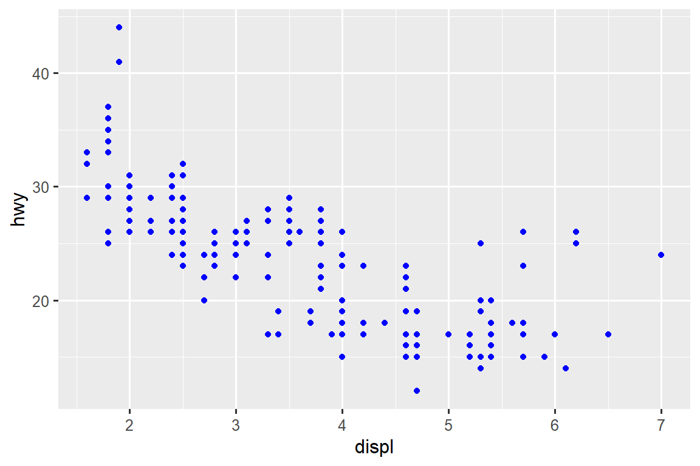
Here, the color doesn’t convey information about a variable, but only changes the appearance of the plot. You’ll need to pick a value that makes sense for that aesthetic:
- The name of a color as a character string, e.g.,
color = "blue" - The size of a point in mm, e.g.,
size = 1 - The shape of a point as a number, e.g,
shape = 1, as shown in Figure fig-shapes.
![Mapping between shapes and the numbers that represent them: 0 - square, 1 - circle, 2 - triangle point up, 3 - plus, 4 - cross, 5 - diamond, 6 - triangle point down, 7 - square cross, 8 - star, 9 - diamond plus, 10 - circle plus, 11 - triangles up and down, 12 - square plus, 13 - circle cross, 14 - square and triangle down, 15 - filled square, 16 - filled circle, 17 - filled triangle point-up, 18 - filled diamond, 19 - solid circle, 20 - bullet (smaller circle), 21 - filled circle blue, 22 - filled square blue, 23 - filled diamond blue, 24 - filled triangle point-up blue, 25 - filled triangle point down blue.](layers_files/figure-html/fig-shapes-1.png)
color and fill aesthetics. The hollow shapes (0–14) have a border determined by color; the solid shapes (15–20) are filled with color; the filled shapes (21–24) have a border of color and are filled with fill. Shapes are arranged to keep similar shapes next to each other.So far we have discussed aesthetics that we can map or set in a scatterplot, when using a point geom. You can learn more about all possible aesthetic mappings in the aesthetic specifications vignette at https://ggplot2.tidyverse.org/articles/ggplot2-specs.html.
The specific aesthetics you can use for a plot depend on the geom you use to represent the data. In the next section we dive deeper into geoms.
10.2.1 Exercises
Create a scatterplot of
hwyvs.displwhere the points are pink filled in triangles.-
Why did the following code not result in a plot with blue points?
ggplot(mpg) + geom_point(aes(x = displ, y = hwy, color = "blue")) What does the
strokeaesthetic do? What shapes does it work with? (Hint: use?geom_point)What happens if you map an aesthetic to something other than a variable name, like
aes(color = displ < 5)? Note, you’ll also need to specify x and y.
10.3 Geometric objects
How are these two plots similar?
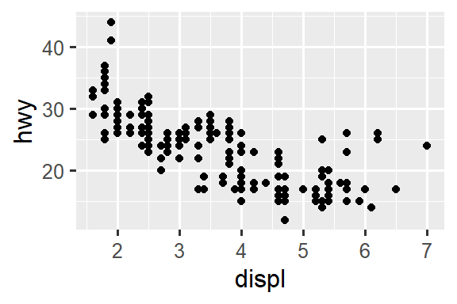
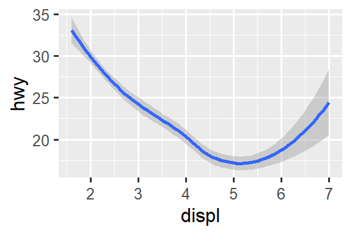
Both plots contain the same x variable, the same y variable, and both describe the same data. But the plots are not identical. Each plot uses a different geometric object, geom, to represent the data. The plot on the left uses the point geom, and the plot on the right uses the smooth geom, a smooth line fitted to the data.
To change the geom in your plot, change the geom function that you add to ggplot(). For instance, to make the plots above, you can use the following code:
# Left
ggplot(mpg, aes(x = displ, y = hwy)) +
geom_point()
# Right
ggplot(mpg, aes(x = displ, y = hwy)) +
geom_smooth()
#> `geom_smooth()` using method = 'loess' and formula = 'y ~ x'Every geom function in ggplot2 takes a mapping argument, either defined locally in the geom layer or globally in the ggplot() layer. However, not every aesthetic works with every geom. You could set the shape of a point, but you couldn’t set the “shape” of a line. If you try, ggplot2 will silently ignore that aesthetic mapping. On the other hand, you could set the linetype of a line. geom_smooth() will draw a different line, with a different linetype, for each unique value of the variable that you map to linetype.
# Left
ggplot(mpg, aes(x = displ, y = hwy, shape = drv)) +
geom_smooth()
# Right
ggplot(mpg, aes(x = displ, y = hwy, linetype = drv)) +
geom_smooth()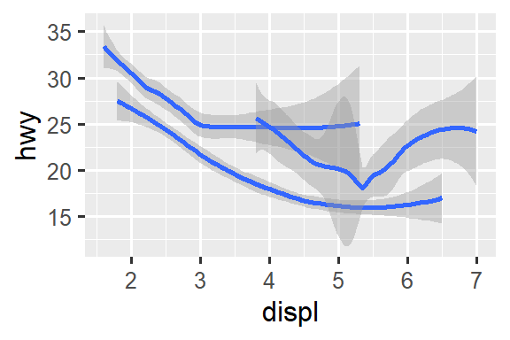
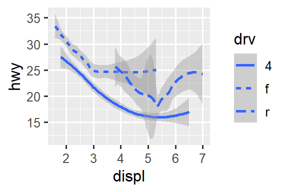
Here, geom_smooth() separates the cars into three lines based on their drv value, which describes a car’s drive train. One line describes all of the points that have a 4 value, one line describes all of the points that have an f value, and one line describes all of the points that have an r value. Here, 4 stands for four-wheel drive, f for front-wheel drive, and r for rear-wheel drive.
If this sounds strange, we can make it clearer by overlaying the lines on top of the raw data and then coloring everything according to drv.
ggplot(mpg, aes(x = displ, y = hwy, color = drv)) +
geom_point() +
geom_smooth(aes(linetype = drv))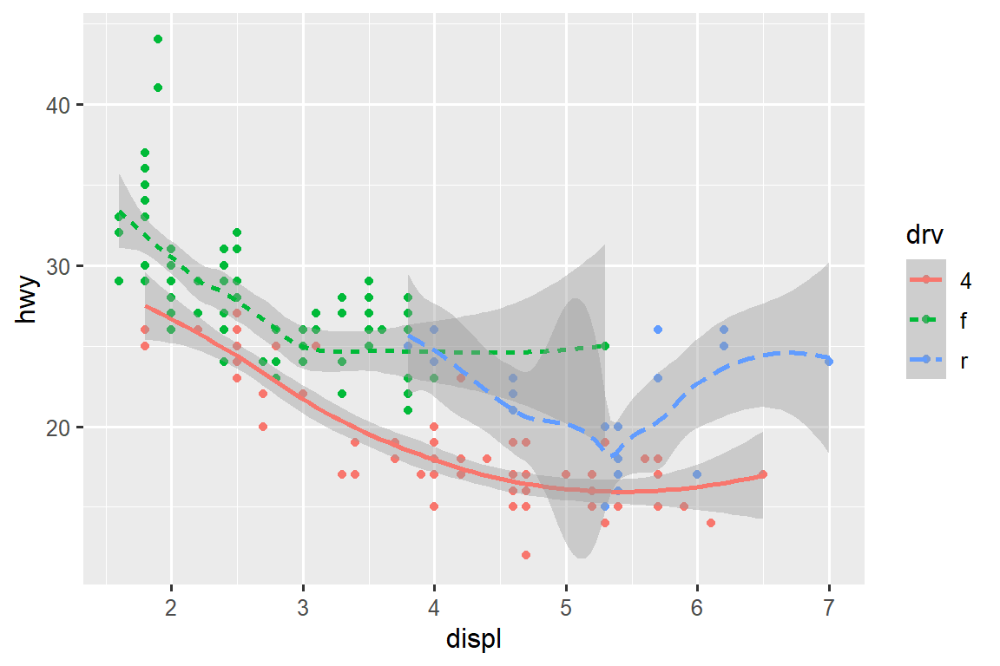
Notice that this plot contains two geoms in the same graph.
Many geoms, like geom_smooth(), use a single geometric object to display multiple rows of data. For these geoms, you can set the group aesthetic to a categorical variable to draw multiple objects. ggplot2 will draw a separate object for each unique value of the grouping variable. In practice, ggplot2 will automatically group the data for these geoms whenever you map an aesthetic to a discrete variable (as in the linetype example). It is convenient to rely on this feature because the group aesthetic by itself does not add a legend or distinguishing features to the geoms.
# Left
ggplot(mpg, aes(x = displ, y = hwy)) +
geom_smooth()
# Middle
ggplot(mpg, aes(x = displ, y = hwy)) +
geom_smooth(aes(group = drv))
# Right
ggplot(mpg, aes(x = displ, y = hwy)) +
geom_smooth(aes(color = drv), show.legend = FALSE)![Three plots, each with highway fuel efficiency on the y-axis and engine size of cars, where data are represented by a smooth curve. The first plot only has these two variables, the center plot has three separate smooth curves for each level of drive train, and the right plot not only has the same three separate smooth curves for each level of drive train but these curves are plotted in different colors, with a legend explaining which color maps to which level. Confidence intervals around the smooth curves are also displayed.](layers_files/figure-html/unnamed-chunk-13-1.png)
![Three plots, each with highway fuel efficiency on the y-axis and engine size of cars, where data are represented by a smooth curve. The first plot only has these two variables, the center plot has three separate smooth curves for each level of drive train, and the right plot not only has the same three separate smooth curves for each level of drive train but these curves are plotted in different colors, with a legend explaining which color maps to which level. Confidence intervals around the smooth curves are also displayed.](layers_files/figure-html/unnamed-chunk-13-2.png)
![Three plots, each with highway fuel efficiency on the y-axis and engine size of cars, where data are represented by a smooth curve. The first plot only has these two variables, the center plot has three separate smooth curves for each level of drive train, and the right plot not only has the same three separate smooth curves for each level of drive train but these curves are plotted in different colors, with a legend explaining which color maps to which level. Confidence intervals around the smooth curves are also displayed.](layers_files/figure-html/unnamed-chunk-13-3.png)
If you place mappings in a geom function, ggplot2 will treat them as local mappings for the layer. It will use these mappings to extend or overwrite the global mappings for that layer only. This makes it possible to display different aesthetics in different layers.
ggplot(mpg, aes(x = displ, y = hwy)) +
geom_point(aes(color = class)) +
geom_smooth()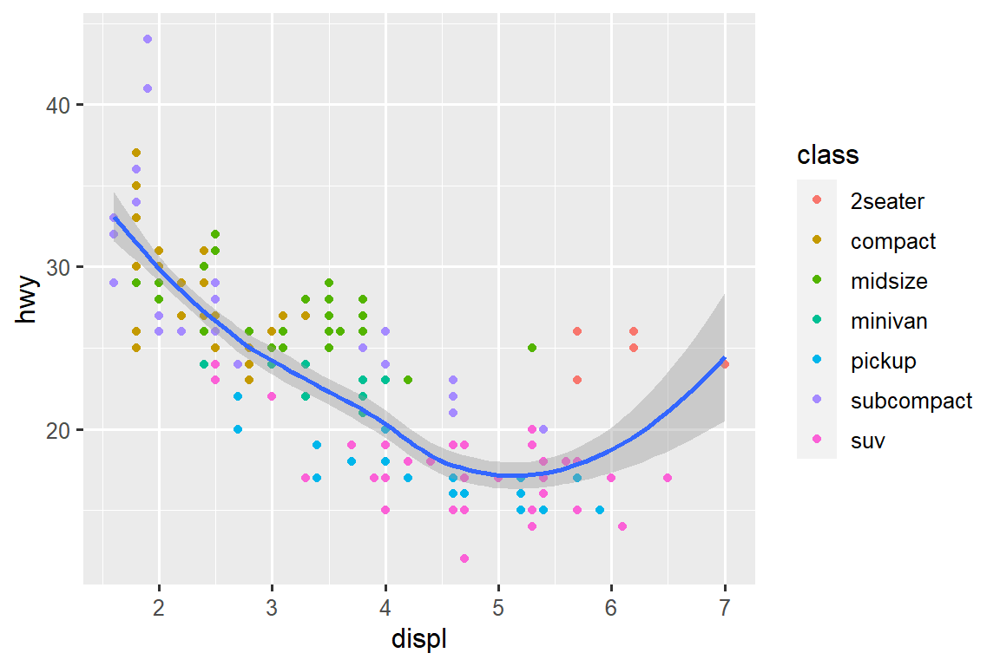
You can use the same idea to specify different data for each layer. Here, we use red points as well as open circles to highlight two-seater cars. The local data argument in geom_point() overrides the global data argument in ggplot() for that layer only.
ggplot(mpg, aes(x = displ, y = hwy)) +
geom_point() +
geom_point(
data = mpg |> filter(class == "2seater"),
color = "red"
) +
geom_point(
data = mpg |> filter(class == "2seater"),
shape = "circle open", size = 3, color = "red"
)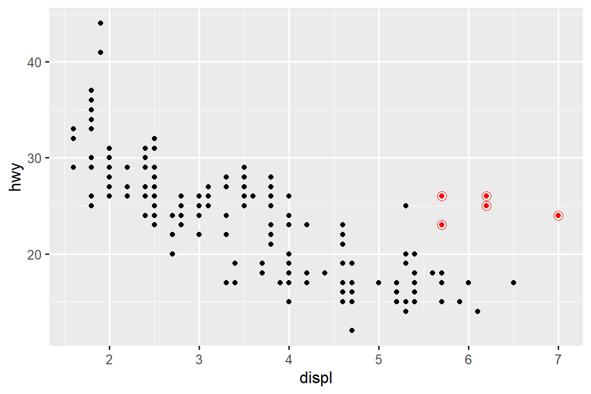
Geoms are the fundamental building blocks of ggplot2. You can completely transform the look of your plot by changing its geom, and different geoms can reveal different features of your data. For example, the histogram and density plot below reveal that the distribution of highway mileage is bimodal and right skewed while the boxplot reveals two potential outliers.
# Left
ggplot(mpg, aes(x = hwy)) +
geom_histogram(binwidth = 2)
# Middle
ggplot(mpg, aes(x = hwy)) +
geom_density()
# Right
ggplot(mpg, aes(x = hwy)) +
geom_boxplot()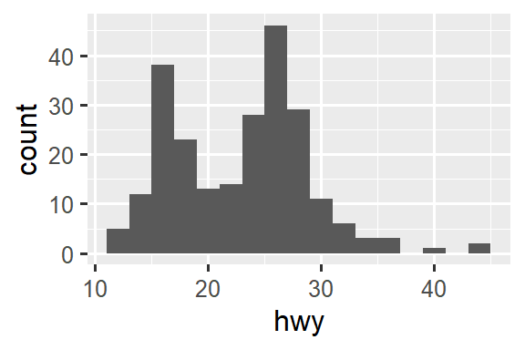
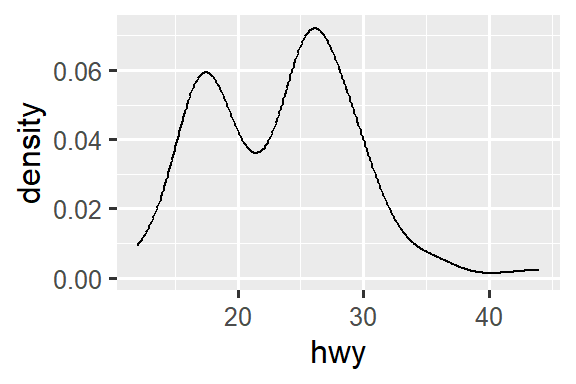
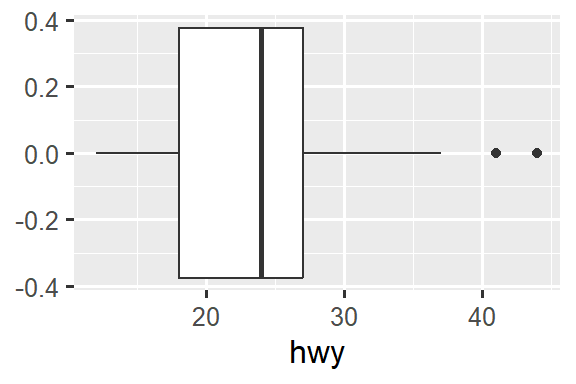
ggplot2 provides more than 40 geoms but these don’t cover all possible plots one could make. If you need a different geom, we recommend looking into extension packages first to see if someone else has already implemented it (see https://exts.ggplot2.tidyverse.org/gallery/ for a sampling). For example, the ggridges package (https://wilkelab.org/ggridges) is useful for making ridgeline plots, which can be useful for visualizing the density of a numerical variable for different levels of a categorical variable. In the following plot not only did we use a new geom (geom_density_ridges()), but we have also mapped the same variable to multiple aesthetics (drv to y, fill, and color) as well as set an aesthetic (alpha = 0.5) to make the density curves transparent.
library(ggridges)
ggplot(mpg, aes(x = hwy, y = drv, fill = drv, color = drv)) +
geom_density_ridges(alpha = 0.5, show.legend = FALSE)
#> Picking joint bandwidth of 1.28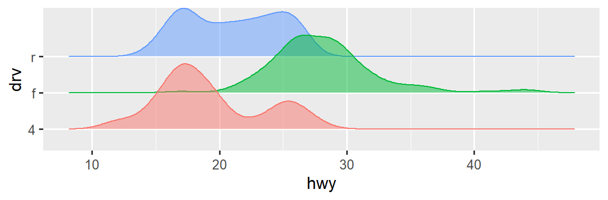
The best place to get a comprehensive overview of all of the geoms ggplot2 offers, as well as all functions in the package, is the reference page: https://ggplot2.tidyverse.org/reference. To learn more about any single geom, use the help (e.g., ?geom_smooth).
10.3.1 Exercises
What geom would you use to draw a line chart? A boxplot? A histogram? An area chart?
-
Earlier in this chapter we used
show.legendwithout explaining it:ggplot(mpg, aes(x = displ, y = hwy)) + geom_smooth(aes(color = drv), show.legend = FALSE)What does
show.legend = FALSEdo here? What happens if you remove it? Why do you think we used it earlier? What does the
seargument togeom_smooth()do?-
Recreate the R code necessary to generate the following graphs. Note that wherever a categorical variable is used in the plot, it’s
drv.![There are six scatterplots in this figure, arranged in a 3x2 grid. In all plots highway fuel efficiency of cars are on the y-axis and engine size is on the x-axis. The first plot shows all points in black with a smooth curve overlaid on them. In the second plot points are also all black, with separate smooth curves overlaid for each level of drive train. On the third plot, points and the smooth curves are represented in different colors for each level of drive train. In the fourth plot the points are represented in different colors for each level of drive train but there is only a single smooth line fitted to the whole data. In the fifth plot, points are represented in different colors for each level of drive train, and a separate smooth curve with different line types are fitted to each level of drive train. And finally in the sixth plot points are represented in different colors for each level of drive train and they have a thick white border.](layers_files/figure-html/unnamed-chunk-19-1.png)
![There are six scatterplots in this figure, arranged in a 3x2 grid. In all plots highway fuel efficiency of cars are on the y-axis and engine size is on the x-axis. The first plot shows all points in black with a smooth curve overlaid on them. In the second plot points are also all black, with separate smooth curves overlaid for each level of drive train. On the third plot, points and the smooth curves are represented in different colors for each level of drive train. In the fourth plot the points are represented in different colors for each level of drive train but there is only a single smooth line fitted to the whole data. In the fifth plot, points are represented in different colors for each level of drive train, and a separate smooth curve with different line types are fitted to each level of drive train. And finally in the sixth plot points are represented in different colors for each level of drive train and they have a thick white border.](layers_files/figure-html/unnamed-chunk-19-2.png)
![There are six scatterplots in this figure, arranged in a 3x2 grid. In all plots highway fuel efficiency of cars are on the y-axis and engine size is on the x-axis. The first plot shows all points in black with a smooth curve overlaid on them. In the second plot points are also all black, with separate smooth curves overlaid for each level of drive train. On the third plot, points and the smooth curves are represented in different colors for each level of drive train. In the fourth plot the points are represented in different colors for each level of drive train but there is only a single smooth line fitted to the whole data. In the fifth plot, points are represented in different colors for each level of drive train, and a separate smooth curve with different line types are fitted to each level of drive train. And finally in the sixth plot points are represented in different colors for each level of drive train and they have a thick white border.](layers_files/figure-html/unnamed-chunk-19-3.png)
![There are six scatterplots in this figure, arranged in a 3x2 grid. In all plots highway fuel efficiency of cars are on the y-axis and engine size is on the x-axis. The first plot shows all points in black with a smooth curve overlaid on them. In the second plot points are also all black, with separate smooth curves overlaid for each level of drive train. On the third plot, points and the smooth curves are represented in different colors for each level of drive train. In the fourth plot the points are represented in different colors for each level of drive train but there is only a single smooth line fitted to the whole data. In the fifth plot, points are represented in different colors for each level of drive train, and a separate smooth curve with different line types are fitted to each level of drive train. And finally in the sixth plot points are represented in different colors for each level of drive train and they have a thick white border.](layers_files/figure-html/unnamed-chunk-19-4.png)
![There are six scatterplots in this figure, arranged in a 3x2 grid. In all plots highway fuel efficiency of cars are on the y-axis and engine size is on the x-axis. The first plot shows all points in black with a smooth curve overlaid on them. In the second plot points are also all black, with separate smooth curves overlaid for each level of drive train. On the third plot, points and the smooth curves are represented in different colors for each level of drive train. In the fourth plot the points are represented in different colors for each level of drive train but there is only a single smooth line fitted to the whole data. In the fifth plot, points are represented in different colors for each level of drive train, and a separate smooth curve with different line types are fitted to each level of drive train. And finally in the sixth plot points are represented in different colors for each level of drive train and they have a thick white border.](layers_files/figure-html/unnamed-chunk-19-5.png)
![There are six scatterplots in this figure, arranged in a 3x2 grid. In all plots highway fuel efficiency of cars are on the y-axis and engine size is on the x-axis. The first plot shows all points in black with a smooth curve overlaid on them. In the second plot points are also all black, with separate smooth curves overlaid for each level of drive train. On the third plot, points and the smooth curves are represented in different colors for each level of drive train. In the fourth plot the points are represented in different colors for each level of drive train but there is only a single smooth line fitted to the whole data. In the fifth plot, points are represented in different colors for each level of drive train, and a separate smooth curve with different line types are fitted to each level of drive train. And finally in the sixth plot points are represented in different colors for each level of drive train and they have a thick white border.](layers_files/figure-html/unnamed-chunk-19-6.png)
10.4 Facets
In sec-data-visualization you learned about faceting with facet_wrap(), which splits a plot into subplots that each display one subset of the data based on a categorical variable.
ggplot(mpg, aes(x = displ, y = hwy)) +
geom_point() +
facet_wrap(~cyl)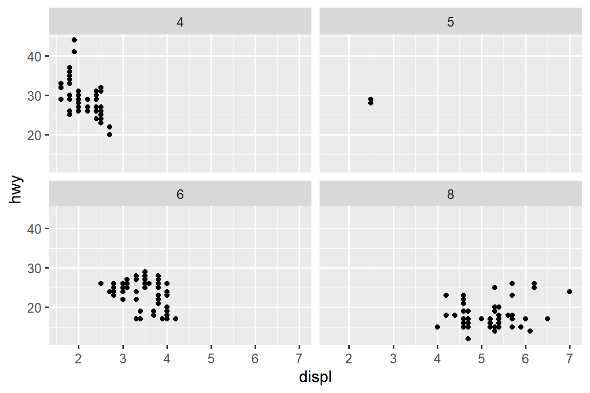
To facet your plot with the combination of two variables, switch from facet_wrap() to facet_grid(). The first argument of facet_grid() is also a formula, but now it’s a double sided formula: rows ~ cols.
ggplot(mpg, aes(x = displ, y = hwy)) +
geom_point() +
facet_grid(drv ~ cyl)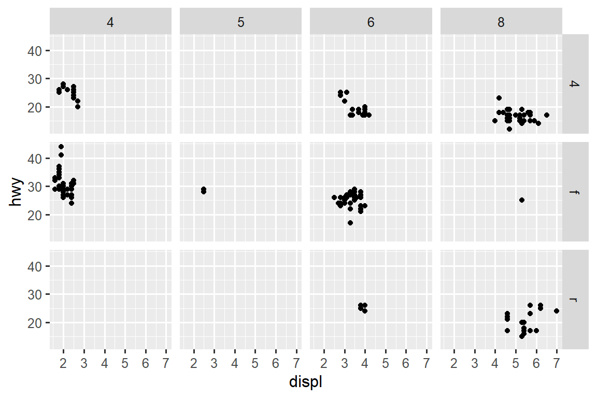
By default each of the facets share the same scale and range for x and y axes. This is useful when you want to compare data across facets but it can be limiting when you want to visualize the relationship within each facet better. Setting the scales argument in a faceting function to "free" will allow for different axis scales across both rows and columns, "free_x" will allow for different scales across rows, and "free_y" will allow for different scales across columns.
ggplot(mpg, aes(x = displ, y = hwy)) +
geom_point() +
facet_grid(drv ~ cyl, scales = "free_y")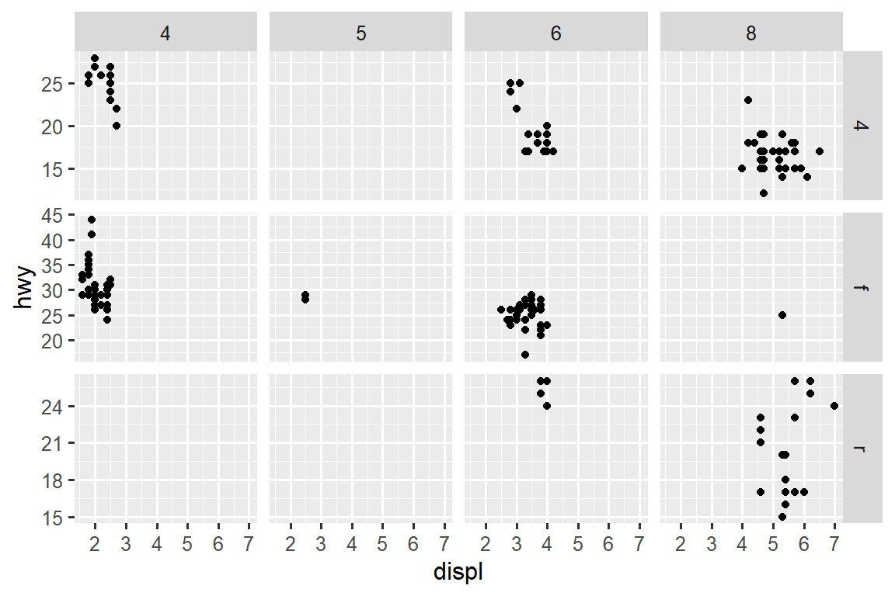
10.4.1 Exercises
What happens if you facet on a continuous variable?
-
What do the empty cells in plot with
facet_grid(drv ~ cyl)mean? Run the following code. How do they relate to the resulting plot?ggplot(mpg) + geom_point(aes(x = drv, y = cyl)) -
What plots does the following code make? What does
.do?ggplot(mpg) + geom_point(aes(x = displ, y = hwy)) + facet_grid(drv ~ .) ggplot(mpg) + geom_point(aes(x = displ, y = hwy)) + facet_grid(. ~ cyl) -
Take the first faceted plot in this section:
ggplot(mpg) + geom_point(aes(x = displ, y = hwy)) + facet_wrap(~ class, nrow = 2)What are the advantages to using faceting instead of the color aesthetic? What are the disadvantages? How might the balance change if you had a larger dataset?
Read
?facet_wrap. What doesnrowdo? What doesncoldo? What other options control the layout of the individual panels? Why doesn’tfacet_grid()havenrowandncolarguments?-
Which of the following plots makes it easier to compare engine size (
displ) across cars with different drive trains? What does this say about when to place a faceting variable across rows or columns?ggplot(mpg, aes(x = displ)) + geom_histogram() + facet_grid(drv ~ .) ggplot(mpg, aes(x = displ)) + geom_histogram() + facet_grid(. ~ drv) -
Recreate the following plot using
facet_wrap()instead offacet_grid(). How do the positions of the facet labels change?ggplot(mpg) + geom_point(aes(x = displ, y = hwy)) + facet_grid(drv ~ .)
10.5 Statistical transformations
Consider a basic bar chart, drawn with geom_bar() or geom_col(). The following chart displays the total number of diamonds in the diamonds dataset, grouped by cut. The diamonds dataset is in the ggplot2 package and contains information on ~54,000 diamonds, including the price, carat, color, clarity, and cut of each diamond. The chart shows that more diamonds are available with high quality cuts than with low quality cuts.
On the x-axis, the chart displays cut, a variable from diamonds. On the y-axis, it displays count, but count is not a variable in diamonds! Where does count come from? Many graphs, like scatterplots, plot the raw values of your dataset. Other graphs, like bar charts, calculate new values to plot:
Bar charts, histograms, and frequency polygons bin your data and then plot bin counts, the number of points that fall in each bin.
Smoothers fit a model to your data and then plot predictions from the model.
Boxplots compute the five-number summary of the distribution and then display that summary as a specially formatted box.
The algorithm used to calculate new values for a graph is called a stat, short for statistical transformation. Figure fig-vis-stat-bar shows how this process works with geom_bar().

You can learn which stat a geom uses by inspecting the default value for the stat argument. For example, ?geom_bar shows that the default value for stat is “count”, which means that geom_bar() uses stat_count(). stat_count() is documented on the same page as geom_bar(). If you scroll down, the section called “Computed variables” explains that it computes two new variables: count and prop.
Every geom has a default stat; and every stat has a default geom. This means that you can typically use geoms without worrying about the underlying statistical transformation. However, there are three reasons why you might need to use a stat explicitly:
-
You might want to override the default stat. In the code below, we change the stat of
geom_bar()from count (the default) to identity. This lets us map the height of the bars to the raw values of a y variable. -
You might want to override the default mapping from transformed variables to aesthetics. For example, you might want to display a bar chart of proportions, rather than counts:
ggplot(diamonds, aes(x = cut, y = after_stat(prop), group = 1)) + geom_bar()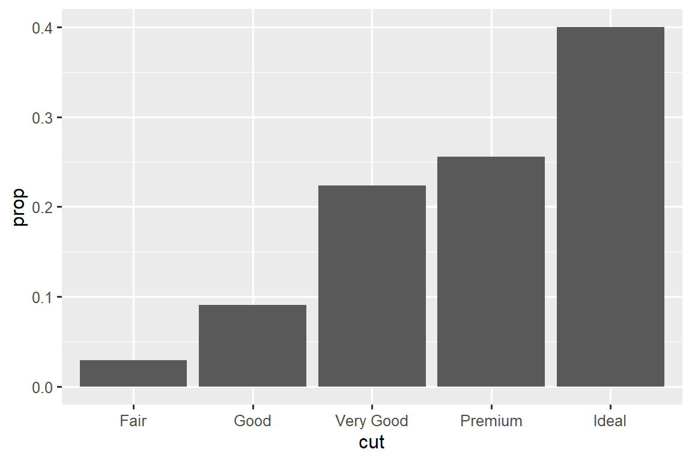
To find the possible variables that can be computed by the stat, look for the section titled “computed variables” in the help for
geom_bar(). -
You might want to draw greater attention to the statistical transformation in your code. For example, you might use
stat_summary(), which summarizes the y values for each unique x value, to draw attention to the summary that you’re computing:ggplot(diamonds) + stat_summary( aes(x = cut, y = depth), fun.min = min, fun.max = max, fun = median )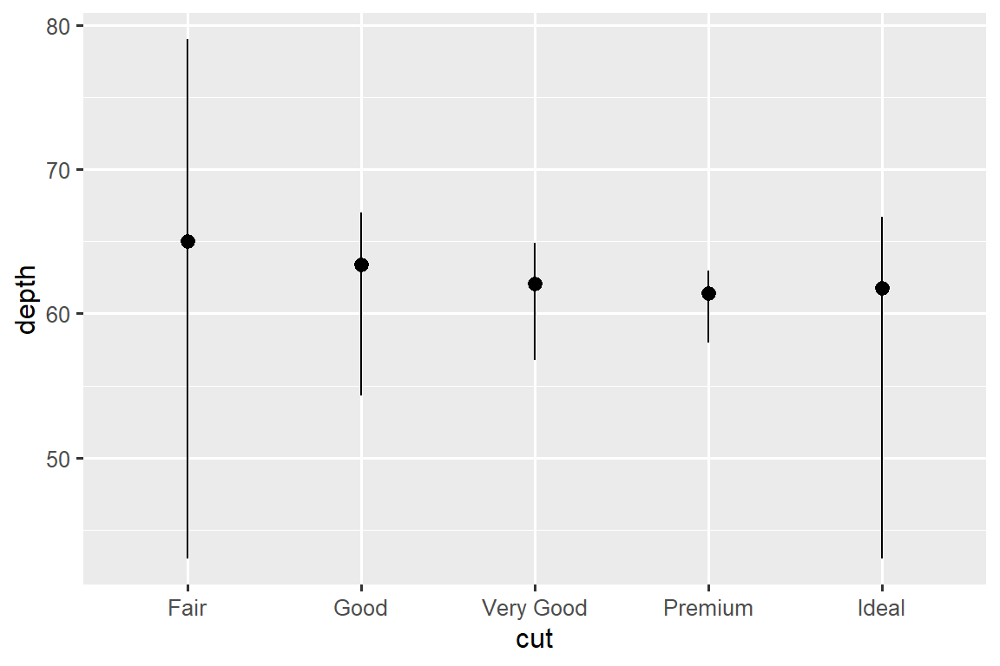
ggplot2 provides more than 20 stats for you to use. Each stat is a function, so you can get help in the usual way, e.g., ?stat_bin.
10.5.1 Exercises
What is the default geom associated with
stat_summary()? How could you rewrite the previous plot to use that geom function instead of the stat function?What does
geom_col()do? How is it different fromgeom_bar()?Most geoms and stats come in pairs that are almost always used in concert. Make a list of all the pairs. What do they have in common? (Hint: Read through the documentation.)
What variables does
stat_smooth()compute? What arguments control its behavior?-
In our proportion bar chart, we need to set
group = 1. Why? In other words, what is the problem with these two graphs?ggplot(diamonds, aes(x = cut, y = after_stat(prop))) + geom_bar() ggplot(diamonds, aes(x = cut, fill = color, y = after_stat(prop))) + geom_bar()
10.6 Position adjustments
There’s one more piece of magic associated with bar charts. You can color a bar chart using either the color aesthetic, or, more usefully, the fill aesthetic:
# Left
ggplot(mpg, aes(x = drv, color = drv)) +
geom_bar()
# Right
ggplot(mpg, aes(x = drv, fill = drv)) +
geom_bar()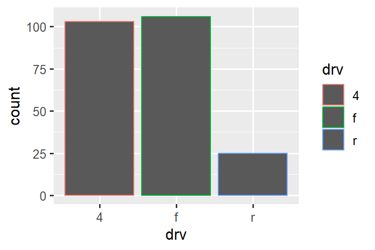
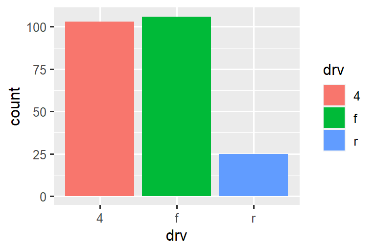
Note what happens if you map the fill aesthetic to another variable, like class: the bars are automatically stacked. Each colored rectangle represents a combination of drv and class.
The stacking is performed automatically using the position adjustment specified by the position argument. If you don’t want a stacked bar chart, you can use one of three other options: "identity", "dodge" or "fill".
-
position = "identity"will place each object exactly where it falls in the context of the graph. This is not very useful for bars, because it overlaps them. To see that overlapping we either need to make the bars slightly transparent by settingalphato a small value, or completely transparent by settingfill = NA.# Left ggplot(mpg, aes(x = drv, fill = class)) + geom_bar(alpha = 1/5, position = "identity") # Right ggplot(mpg, aes(x = drv, color = class)) + geom_bar(fill = NA, position = "identity")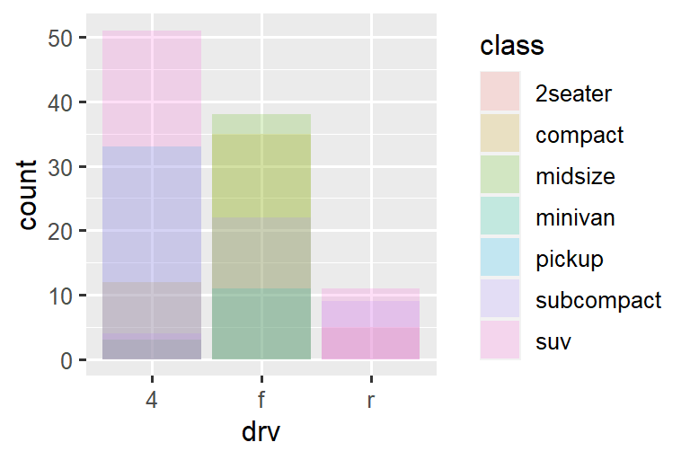
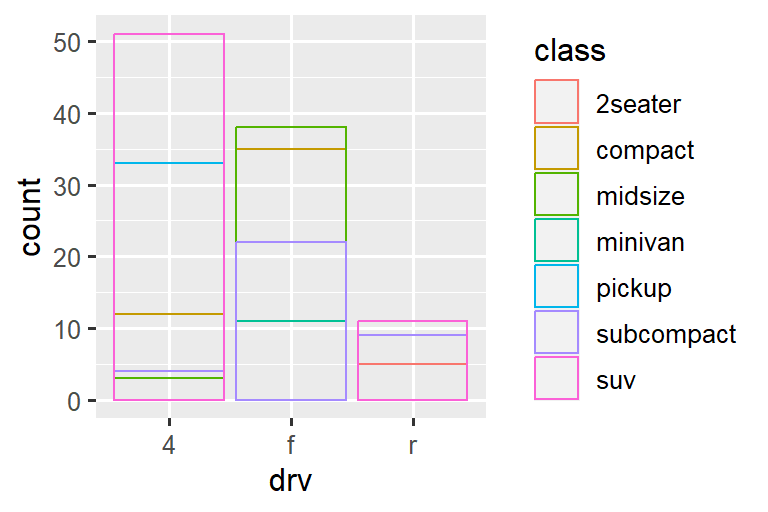
The identity position adjustment is more useful for 2d geoms, like points, where it is the default.
position = "fill"works like stacking, but makes each set of stacked bars the same height. This makes it easier to compare proportions across groups.-
position = "dodge"places overlapping objects directly beside one another. This makes it easier to compare individual values.
![On the left, segmented bar chart of drive types of cars, where each bar is filled with colors for the levels of class. Height of each bar is 1 and heights of the colored segments represent the proportions of cars with a given class level within a given drive type. On the right, dodged bar chart of drive types of cars. Dodged bars are grouped by levels of drive type. Within each group bars represent each level of class. Some classes are represented within some drive types and not represented in others, resulting in unequal number of bars within each group. Heights of these bars represent the number of cars with a given level of drive type and class.](layers_files/figure-html/unnamed-chunk-37-1.png)
![On the left, segmented bar chart of drive types of cars, where each bar is filled with colors for the levels of class. Height of each bar is 1 and heights of the colored segments represent the proportions of cars with a given class level within a given drive type. On the right, dodged bar chart of drive types of cars. Dodged bars are grouped by levels of drive type. Within each group bars represent each level of class. Some classes are represented within some drive types and not represented in others, resulting in unequal number of bars within each group. Heights of these bars represent the number of cars with a given level of drive type and class.](layers_files/figure-html/unnamed-chunk-37-2.png)
There’s one other type of adjustment that’s not useful for bar charts, but can be very useful for scatterplots. Recall our first scatterplot. Did you notice that the plot displays only 126 points, even though there are 234 observations in the dataset?

The underlying values of hwy and displ are rounded so the points appear on a grid and many points overlap each other. This problem is known as overplotting. This arrangement makes it difficult to see the distribution of the data. Are the data points spread equally throughout the graph, or is there one special combination of hwy and displ that contains 109 values?
You can avoid this gridding by setting the position adjustment to “jitter”. position = "jitter" adds a small amount of random noise to each point. This spreads the points out because no two points are likely to receive the same amount of random noise.
ggplot(mpg, aes(x = displ, y = hwy)) +
geom_point(position = "jitter")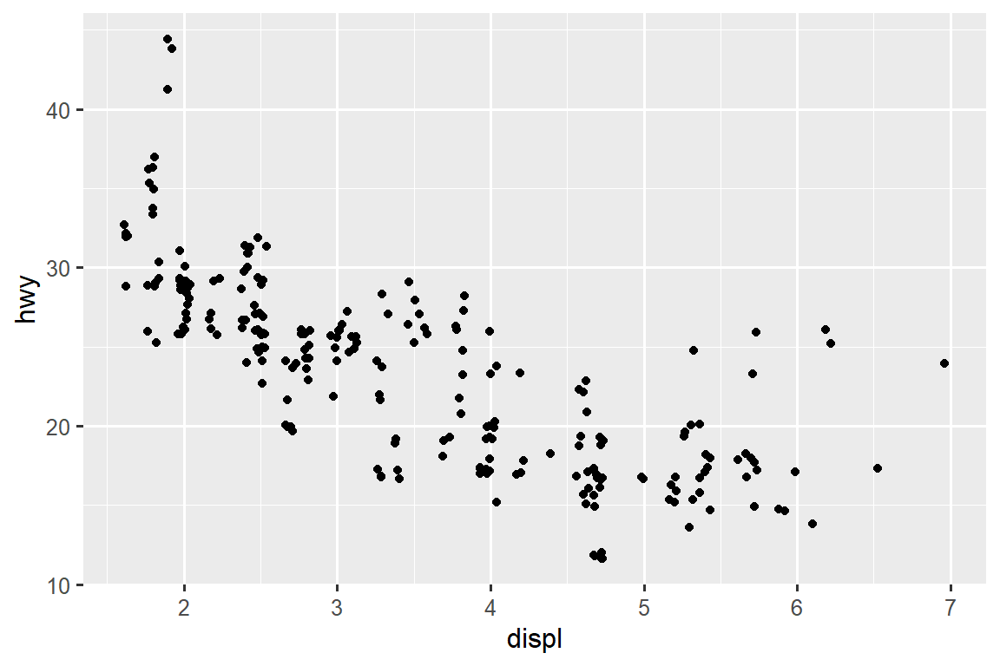
Adding randomness seems like a strange way to improve your plot, but while it makes your graph less accurate at small scales, it makes your graph more revealing at large scales. Because this is such a useful operation, ggplot2 comes with a shorthand for geom_point(position = "jitter"): geom_jitter().
To learn more about a position adjustment, look up the help page associated with each adjustment: ?position_dodge, ?position_fill, ?position_identity, ?position_jitter, and ?position_stack.
10.6.1 Exercises
-
What is the problem with the following plot? How could you improve it?
ggplot(mpg, aes(x = cty, y = hwy)) + geom_point() -
What, if anything, is the difference between the two plots? Why?
ggplot(mpg, aes(x = displ, y = hwy)) + geom_point() ggplot(mpg, aes(x = displ, y = hwy)) + geom_point(position = "identity") What parameters to
geom_jitter()control the amount of jittering?Compare and contrast
geom_jitter()withgeom_count().What’s the default position adjustment for
geom_boxplot()? Create a visualization of thempgdataset that demonstrates it.
10.7 Coordinate systems
Coordinate systems are probably the most complicated part of ggplot2. The default coordinate system is the Cartesian coordinate system where the x and y positions act independently to determine the location of each point. There are two other coordinate systems that are occasionally helpful.
-
coord_quickmap()sets the aspect ratio correctly for geographic maps. This is very important if you’re plotting spatial data with ggplot2. We don’t have the space to discuss maps in this book, but you can learn more in the Maps chapter of ggplot2: Elegant graphics for data analysis.nz <- map_data("nz") ggplot(nz, aes(x = long, y = lat, group = group)) + geom_polygon(fill = "white", color = "black") ggplot(nz, aes(x = long, y = lat, group = group)) + geom_polygon(fill = "white", color = "black") + coord_quickmap()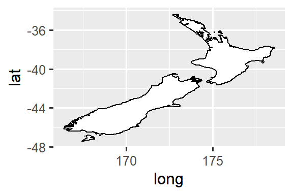
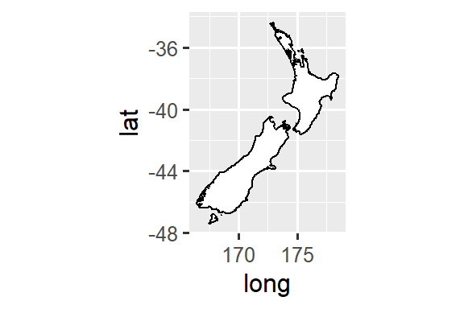
-
coord_polar()uses polar coordinates. Polar coordinates reveal an interesting connection between a bar chart and a Coxcomb chart.bar <- ggplot(data = diamonds) + geom_bar( mapping = aes(x = clarity, fill = clarity), show.legend = FALSE, width = 1 ) + theme(aspect.ratio = 1) bar + coord_flip() bar + coord_polar()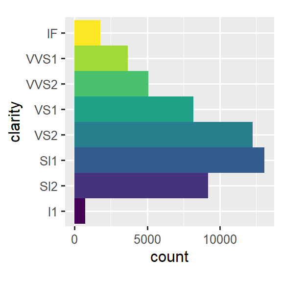
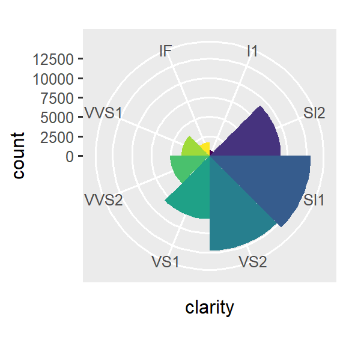
10.7.1 Exercises
Turn a stacked bar chart into a pie chart using
coord_polar().What’s the difference between
coord_quickmap()andcoord_map()?-
What does the following plot tell you about the relationship between city and highway mpg? Why is
coord_fixed()important? What doesgeom_abline()do?ggplot(data = mpg, mapping = aes(x = cty, y = hwy)) + geom_point() + geom_abline() + coord_fixed()
10.8 The layered grammar of graphics
We can expand on the graphing template you learned in sec-ggplot2-calls by adding position adjustments, stats, coordinate systems, and faceting:
ggplot(data = <DATA>) +
<GEOM_FUNCTION>(
mapping = aes(<MAPPINGS>),
stat = <STAT>,
position = <POSITION>
) +
<COORDINATE_FUNCTION> +
<FACET_FUNCTION>Our new template takes seven parameters, the bracketed words that appear in the template. In practice, you rarely need to supply all seven parameters to make a graph because ggplot2 will provide useful defaults for everything except the data, the mappings, and the geom function.
The seven parameters in the template compose the grammar of graphics, a formal system for building plots. The grammar of graphics is based on the insight that you can uniquely describe any plot as a combination of a dataset, a geom, a set of mappings, a stat, a position adjustment, a coordinate system, a faceting scheme, and a theme.
To see how this works, consider how you could build a basic plot from scratch: you could start with a dataset and then transform it into the information that you want to display (with a stat). Next, you could choose a geometric object to represent each observation in the transformed data. You could then use the aesthetic properties of the geoms to represent variables in the data. You would map the values of each variable to the levels of an aesthetic. These steps are illustrated in Figure fig-visualization-grammar. You’d then select a coordinate system to place the geoms into, using the location of the objects (which is itself an aesthetic property) to display the values of the x and y variables.

At this point, you would have a complete graph, but you could further adjust the positions of the geoms within the coordinate system (a position adjustment) or split the graph into subplots (faceting). You could also extend the plot by adding one or more additional layers, where each additional layer uses a dataset, a geom, a set of mappings, a stat, and a position adjustment.
You could use this method to build any plot that you imagine. In other words, you can use the code template that you’ve learned in this chapter to build hundreds of thousands of unique plots.
If you’d like to learn more about the theoretical underpinnings of ggplot2, you might enjoy reading “The Layered Grammar of Graphics”, the scientific paper that describes the theory of ggplot2 in detail.
10.9 Summary
In this chapter you learned about the layered grammar of graphics starting with aesthetics and geometries to build a simple plot, facets for splitting the plot into subsets, statistics for understanding how geoms are calculated, position adjustments for controlling the fine details of position when geoms might otherwise overlap, and coordinate systems which allow you to fundamentally change what x and y mean. One layer we have not yet touched on is theme, which we will introduce in sec-themes.
Two very useful resources for getting an overview of the complete ggplot2 functionality are the ggplot2 cheatsheet (which you can find at https://posit.co/resources/cheatsheets) and the ggplot2 package website (https://ggplot2.tidyverse.org).
An important lesson you should take from this chapter is that when you feel the need for a geom that is not provided by ggplot2, it’s always a good idea to look into whether someone else has already solved your problem by creating a ggplot2 extension package that offers that geom.